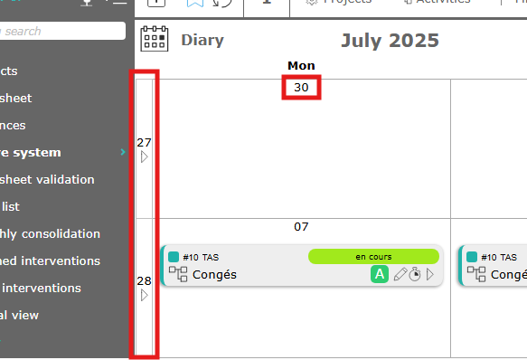
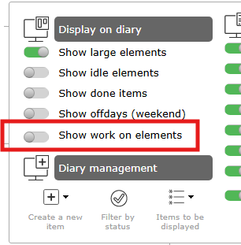
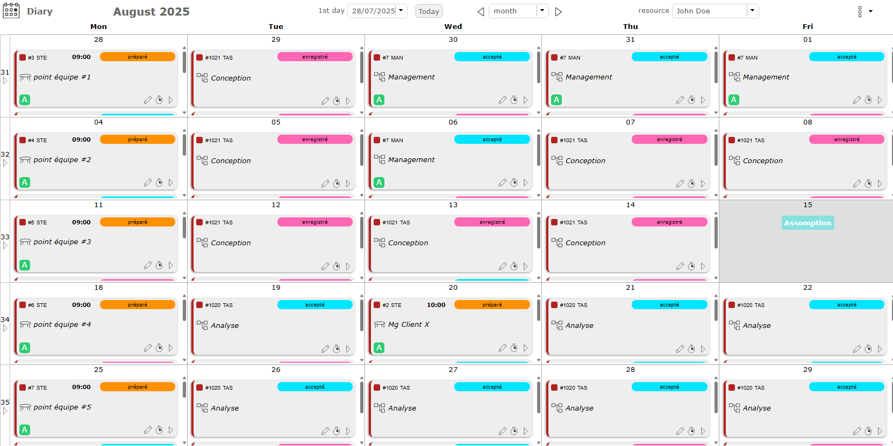
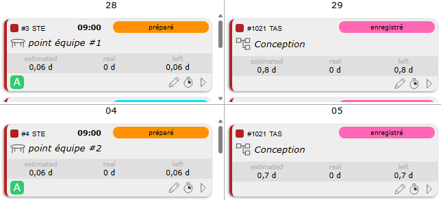
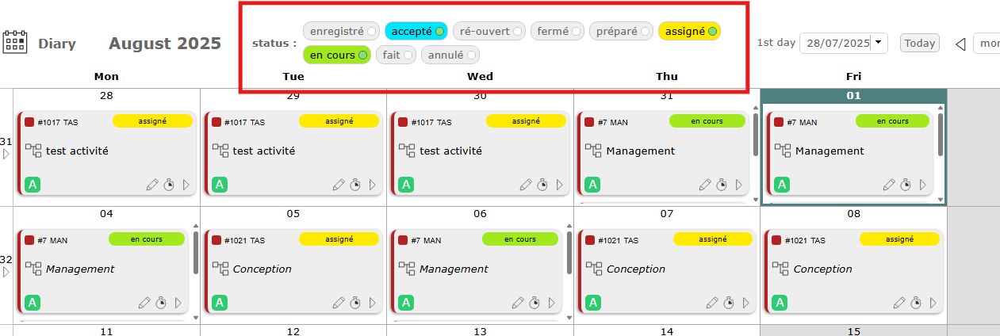
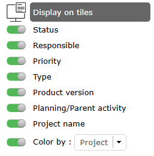

Diary¶
The calendar allows you to view a resource’s scheduled tasks in a calendar-like view.
This view can be daily, weekly, or monthly, and the tiles can be personalized.

Diary calendar¶
Display Options¶
First day
Displays a specific date.
The first day of the week or month is displayed depending on the selected view (weekly, monthly).
Today button
Click on the today button to go to today’s date.
Display format
Choose from 3 different display modes: monthly, weekly or daily
Month
Allows you to view the full month (1 to 31).
Week
Allows you to view the 5 days of the week with days off or not. Monday to friday with disply of hours.
Day
Allows you to view the full day with hours.
You can also change this display by clicking on the edges of the day boxes.
Click the arrow to the left of the box to display the week.
Click the day number to display the full day only.

Arrow to change the calendar display format¶
Resource
The resource drop-down list allows you to select the resource of your choice to view their calendar.
You must have visibility rights to the resources; otherwise, you will only see your name.
This field is read-only if you do not have visibility rights on other resources.
Diary Options¶

Diary options¶
Display on Diary¶
Show large element
Switch from a standard “tile” to a wider tile that fits the height of the square and which allows more informations to be displayed.

Large element on diary¶
When the “Large Element” view is selected, a new option appears allowing you to display the workload on the element.
This is the “show work on element” option

New option with large element¶
See also
Show idle element
As on any ProjeQtOr screen, you have the possibility to display closed elements.
Show done element
In the same way you have the possibility of displaying the elements already completed, that is to say in a “done” status.
Show offdays (weekend)
Display or not non-working days

View of the newspaper without non-working days on the weekend¶
Show Work on element

Show work on element¶
Diary management¶

Diary management¶
In a case, click on
 to create a new item.
to create a new item.Click on
 to display status and filter items.
to display status and filter items.

Status filters¶
Click on
 to display only certain items on the calendar like activities, meetings, actions, tickets…
to display only certain items on the calendar like activities, meetings, actions, tickets…

Display on tiles and case¶
The tiles are customizable and you can choose what information to see directly on the tile.

Display on tiles options¶
You can display:
the status,
the responsible,
the priority of the item,
the type,
the product version linked,
the planning/parent activity linked
the project name and his color.
Some elements are only visible on large tiles.
Click
 to open the pop-up window corresponding to the selected item.
to open the pop-up window corresponding to the selected item.Click
 to directly open the timesheet screen with the selected item’s row and the current day.
to directly open the timesheet screen with the selected item’s row and the current day.Click on
 click to open the item on its dedicated screen.
click to open the item on its dedicated screen.
Create an item on a case¶
You can add certain items directly from the calendar.
Hover over a box to see the create button appear.
This also works on days off.

New item¶
Diary Items¶
Each item the resource is assigned to is displayed in its log.
All types of holidays and deliveries are also displayed.
The color that appears on the objects are those of the project to which they are attached.

Right click on an item allow you to diplayed the contextual menu.
Several actions are proposed.